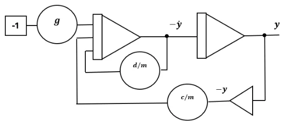
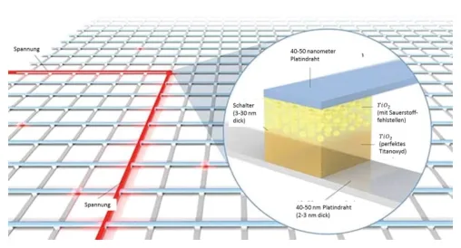
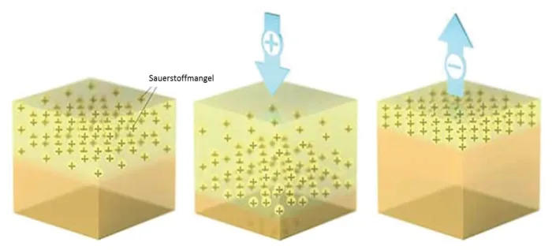
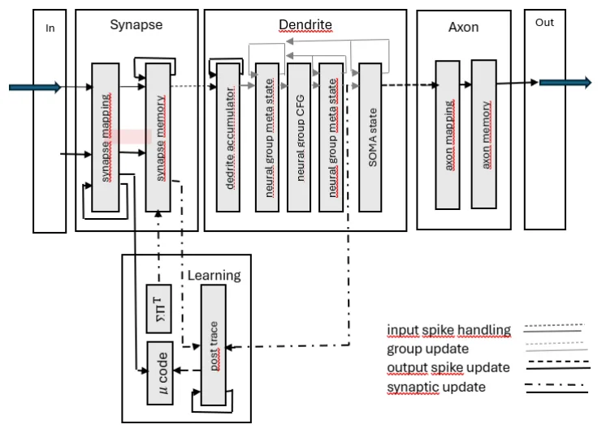
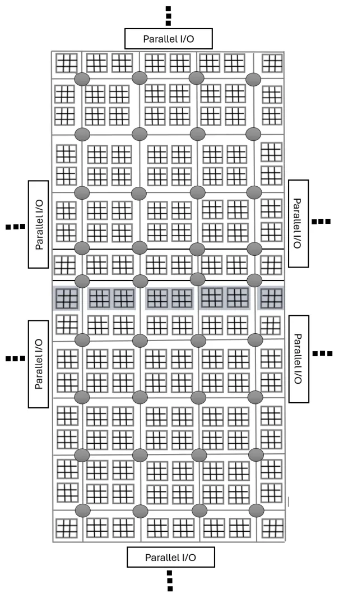
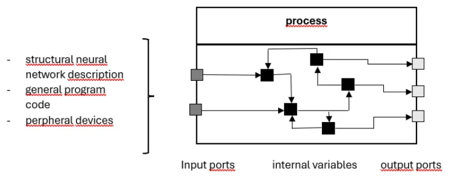

Chương 13 — Triển vọng công nghệ của hệ thống mô phỏng thần kinh điện tử
Chương 13
Triển vọng công nghệ của các hệ thống
mô phỏng thần kinh điện tử
Chương này giải thích các nền tảng kỹ thuật của các hệ thống mô phỏng thần kinh điện tử (hướng não bộ) có thể được sử dụng để triển khai tính toán thực và tính toán tương tự. Tương tự như công nghệ lượng tử và máy tính lượng tử, phần cứng của các hệ thống mô phỏng thần kinh hiện đang trải qua quá trình phát triển năng động với nhiều cách tiếp cận khác nhau. Trọng tâm của lĩnh vực này là các hệ thống mô phỏng thần kinh memristive sử dụng memristor (điện trở nhớ, xem Chương 12) để mô hình hóa các quá trình truyền tín hiệu synap và nơ-ron. Cũng như trong sự phát triển của tính toán số, điều quan trọng là phần cứng phải được bổ sung bởi phần mềm dựa trên nó, trong đó việc lập trình các hệ thống mô phỏng thần kinh có thể được hiện thực hóa. Chương này kết thúc bằng một cái nhìn tổng quan về các vật liệu phần cứng khác nhau hiện đang được sử dụng để hiện thực hóa các kiến trúc máy tính memristive. Một lợi thế quan trọng của các hệ thống mô phỏng thần kinh là hiệu quả năng lượng của các kiến trúc mạng này, tương tự như bộ não con người, so với mức tiêu thụ năng lượng khổng lồ của các kiến trúc von Neumann số trong tính toán số.
Từ máy tính tương tự đến tính toán mô phỏng thần kinh
Máy tính mô phỏng thần kinh nằm trong truyền thống của máy tính tương tự. Trong lịch sử, máy tính tương tự đã giải quyết các bài toán với các đại lượng liên tục tương tự như các biến thiên liên tục của các đại lượng cơ học, điện học hoặc thủy lực. Từ thời cổ đại, các mô hình cơ học sơ khai về chu kỳ và hình cầu đã được sử dụng để xác định vị trí của các thiên thể. Một ví dụ là thước trắc tinh (astrolabe) vốn được sử dụng thực tế để giải các bài toán trong thiên văn học cầu. Thước tính logarit ra đời
329
330 Trí tuệ nhân tạo của các hệ thống mô phỏng thần kinh cùng với khái niệm toán học về logarit (Charette, 2006; Sezgin, 2004). Thực tế, đó là một máy tính tương tự vận hành bằng tay cho phép nhân và phép chia. Vào cuối thế kỷ 19, các máy tính tương tự cơ học đã được thiết kế để giải các phương trình vi phân bằng phép tích phân với các cơ cấu bánh xe và đĩa.
Một bước đột phá đối với máy tính tương tự là việc ứng dụng các thiết bị kỹ thuật điện. Từ góc độ toán học, sự tương đồng giữa các thành phần cơ học tuyến tính như lò xo và bộ giảm chấn với các thành phần điện như tụ điện, cuộn cảm và điện trở là rất rõ ràng. Chỉ cần một vài bộ khuếch đại thuật toán và các linh kiện tuyến tính thụ động là có thể xây dựng một mạch điện biểu diễn cùng các phương trình như hệ thống cơ học. Một ưu điểm của các máy tính tương tự này là khả năng cho phép chúng chạy nhanh hơn hoặc chậm hơn so với tiến trình thực tế được mô phỏng.
Cuối cùng, máy tính tương tự điện tử có thể được chuyên biệt hóa để giải nhiều loại phương trình vi phân khác nhau. Một ví dụ là động lực học của một khối lượng gắn lò xo được mô tả bởi phương trình vi phân m¨y + d ˙y + cy = mg, với y là vị trí thẳng đứng của khối lượng m, d là hệ số cản, c là độ cứng lò xo, và g là gia tốc trọng trường của Trái Đất. Để tính toán, phương trình được viết lại thành ¨y = −d/m ˙y −c/m y −g. Trong Hình 1, mạch điện tử tương tự gồm hai bộ tích phân cho các biến trạng thái vận tốc −˙y và vị trí y, một bộ đảo dấu và ba chiết áp. Trong một mô hình toán học giả định của các phương trình vi phân, mô hình điện tử tính toán chính xác với

Hình 1. Chuyển động tắt dần của khối lượng gắn lò xo với mạch tương tự cho động lực học của nó (vẽ lại theo Wikipedia: Analog Computer, tr. 6).
Triển vọng công nghệ của các hệ thống mô phỏng thần kinh điện tử 331
các đại lượng liên tục vô hạn. Tuy nhiên, để đọc kết quả tính toán, chỉ có thể chỉ thị các giá trị hữu hạn xấp xỉ.
Máy tính tương tự không chỉ được sử dụng trong các ứng dụng khoa học mà còn trong công nghiệp, quân sự và kinh tế cho đến những năm 1950 vì vào thời điểm đó chúng nhanh hơn nhiều so với máy tính số (Ulmann, 2013; Small, 2001). Máy tính số xấp xỉ các đại lượng liên tục biến thiên bằng các chuỗi giá trị rời rạc như các bit. Nhưng với tiến bộ kỹ thuật của đèn chân không, transistor, mạch tích hợp và bộ vi xử lý, máy tính số đã vượt lên trước máy tính tương tự kể từ giai đoạn những năm 1950 đến 1970. Đối với các tác vụ đặc biệt, máy tính tương tự vẫn được xem xét trong những năm 1980 liên quan đến tính toán xấp xỉ tiết kiệm năng lượng. Với sự phát triển của mạng nơ-ron trong học máy của trí tuệ nhân tạo, những hướng đi mới đã được mở ra hướng tới mạng nơ-ron xung (SNN) với tính toán mô phỏng thần kinh tương tự.
Vật liệu phần cứng của tính toán mô phỏng thần kinh
Thay vì các vật liệu sinh học, các thành phần ở cấp độ linh kiện hoặc cấp độ mạch của tính toán mô phỏng thần kinh được hiện thực hóa bằng nhiều loại vật liệu mới ở quy mô nano. Trước khi xem xét các vật liệu thích hợp của memristor, chúng ta hãy nhớ lại chức năng của memristor. Theo truyền thống, trong kỹ thuật điện, chỉ có điện trở, tụ điện và cuộn cảm được phân biệt là các phần tử chuyển mạch. Chúng kết nối bốn biến chuyển mạch là điện tích, dòng điện, điện áp và từ thông: Điện trở kết nối điện tích và dòng điện, cuộn cảm kết nối từ thông và dòng điện, còn tụ điện kết nối điện áp và điện tích. Nhưng cái gì kết nối điện tích và từ thông? Chua (1971) đã tiên đoán về memristor. Về mặt toán học, điều này được thực hiện bằng một hàm R(q) (“hàm điện trở nhớ”), trong đó sự biến thiên của từ thông Φ theo điện tích q được giữ lại, tức là:
R(q) = dΦ(q)
dq .
Sự biến thiên theo thời gian của điện tích q xác định dòng điện i(t) với i(t) = dq dt .
332 Trí tuệ nhân tạo của các hệ thống mô phỏng thần kinh
Sự biến thiên theo thời gian của từ thông Φ xác định điện áp v(t) với v(t) = dΦ dt .
Kết quả là điện áp v tại một memristor theo dòng điện i phụ thuộc trực tiếp vào điện trở nhớ:
v = R(q)i.
Điều này gợi nhớ đến định luật Ohm v = Ri, định nghĩa rằng điện áp v tỷ lệ thuận với dòng điện i với điện trở R là hằng số tỷ lệ. Tuy nhiên, điện trở nhớ không phải là hằng số, mà phụ thuộc vào trạng thái của điện tích q. Ngược lại, đối với dòng điện, ta có i = G(q)v, trong đó hàm G(q) = R(q)−1 được gọi là “độ dẫn nhớ” (memductance, ghép từ tiếng Anh “memory” nghĩa là bộ nhớ và “conductance” nghĩa là độ dẫn).
Một memristor có thể được tổng quát hóa thành một hệ thống memristive. Một hệ thống memristive không còn bị thu hẹp về một biến trạng thái đơn lẻ và một phương trình tuyến tính dẫn động bởi điện tích hay từ thông.
Một hệ thống memristive là một hệ thống vật lý tùy ý, được xác định bởi một tập hợp các biến trạng thái bên trong ⃗s (dưới dạng một vector). Nó tuân theo phương trình đầu vào–đầu ra tổng quát ⃗y(t) = g(⃗s,⃗u, t)⃗u(t), với đầu vào ⃗u(t) (tức là điện áp) và đầu ra ⃗y (tức là dòng điện). Sự phát triển của một trạng thái nhìn chung được xác định bởi phương trình vi phân d⃗s dt = f(⃗s,⃗u, t).
Các hệ thống memristive thể hiện một hành vi phi tuyến và phức tạp đặc biệt. Điển hình là đường cong trễ (hysteresis) trong biểu đồ v/i ở Hình 2, chạy theo các vòng khép kín qua vòng trễ thắt nút (pinched hysteresis loop).
Nói chung, hiện tượng trễ đề cập đến hành vi của biến đầu ra của một hệ thống phản ứng với một biến đầu vào bằng một tín hiệu bị trễ
Triển vọng công nghệ của các hệ thống mô phỏng thần kinh điện tử 333

Hình 2. Đường cong trễ của một memristor (phụ thuộc vào tần số góc ω với ω1 < ω2).
(tiếng Hy Lạp: hysteros) và biến đổi. Hành vi phụ thuộc trực tiếp không chỉ vào biến đầu vào mà còn vào trạng thái trước đó của biến đầu ra. Nếu biến đầu vào giống nhau, hệ thống có thể nhận một trong số nhiều trạng thái có thể có.
Với vai trò là các “neuristor”, các hệ thống memristive mô phỏng hành vi của các synap và do đó trở nên thú vị đối với máy tính mô phỏng thần kinh. Vì mục đích này, các kênh ion trong mô hình mạch được xem như các hệ thống memristive. Độ dẫn phụ thuộc thời gian Gk của kênh ion kali theo Hodgkin–Huxley được thay thế bằng một memristor điều khiển bằng điện tích phụ thuộc vào một biến trạng thái. Tương tự, độ dẫn phụ thuộc thời gian GNa của kênh ion natri theo Hodgkin–Huxley được thay thế bằng một memristor điều khiển bằng điện tích phụ thuộc vào hai biến trạng thái. Những đại lượng được xác định rõ ràng này giải thích chính xác các dữ liệu đo lường và quan sát thực nghiệm của synap và nơ-ron (Sah et al., 2014).
Nhưng làm thế nào để các neuristor như vậy có thể được hiện thực hóa về mặt kỹ thuật bằng các vật liệu thích hợp? Lần đầu tiên vào năm 2007, Williams (Hewlett–Packard–Thung lũng Silicon) đã chế tạo một phiên bản mới của hệ thống memristive, vốn từ đó đến nay liên tục được đơn giản hóa và cải tiến (Williams, 2008). Hãy tưởng tượng một mạng thanh chéo (crossbar) gồm các dây dẫn dọc và ngang giao nhau, gợi nhớ đến một lưới dây (Hình 3). Các giao điểm của dây dọc và dây ngang được nối với nhau bằng một công tắc. Để đóng công tắc, một điện áp dương được đặt vào cả hai dây. Để mở nó, điện tích được đảo ngược.
334 Trí tuệ nhân tạo của các hệ thống mô phỏng thần kinh


Hình 3. Hệ thống memristive với các công tắc làm từ titan dioxit (Mainzer, 2019, tr. 197; theo Tetzlaff, 2014, tr. 14).
Để đạt được hành vi memristive, các công tắc được chế tạo theo một kiến trúc cụ thể. Nó gợi nhớ đến một chiếc bánh sandwich, trong đó một lớp titan dioxit dày vài nanomet nằm giữa hai điện cực bạch kim (như hai “lát bánh mì”). Trong Hình 3, lớp titan dioxit phía dưới đóng vai trò là chất cách điện. Lớp titan dioxit phía trên có sự thiếu hụt oxy. Bạn có thể hình dung chúng như những bọt khí nhỏ trong cốc bia — với điểm khác biệt là chúng không thể thoát ra ngoài. Lớp titan oxit này có độ dẫn điện cao. Nếu một điện áp dương được đặt vào, các chỗ thiếu hụt oxy sẽ dịch chuyển. Điều này làm giảm độ dày của lớp cách điện phía dưới và làm tăng độ dẫn điện tổng thể của công tắc. Ngược lại, điện tích âm sẽ hút các chỗ thiếu hụt oxy mang điện tích dương. Điều này làm tăng lớp cách điện và làm giảm độ dẫn điện tổng thể của công tắc.
Triển vọng công nghệ của các hệ thống mô phỏng thần kinh điện tử 335
Hành vi memristive trở nên rõ ràng khi điện áp được chuyển đổi sang dương hoặc âm: Khi đó, các bọt khí nhỏ của sự thiếu hụt oxy không thay đổi mà vẫn giữ nguyên vị trí của chúng. Ranh giới giữa hai lớp titan dioxit bị “đóng băng”, nhờ vậy công tắc có thể “nhớ” mức điện áp được đặt vào lần cuối cùng. Nó hoạt động giống như một memristor.
Các memristor khác sử dụng các lớp silic dioxit có kích thước vài nanomet, vốn có hiệu quả về mặt chi phí. Các bộ nhớ thanh chéo do Hewlett-Packard sản xuất đã có mật độ đóng gói khổng lồ vào khoảng 100 Gb/cm2. Chúng cũng có thể được kết hợp với các cấu trúc bán dẫn khác. Do đó, không thể loại trừ khả năng chúng sẽ khởi xướng sự phát triển của các cấu trúc mô phỏng thần kinh để mô phỏng bộ não con người.
Có nhiều khả năng để hiện thực hóa memristor bằng các vật liệu thích hợp. Chúng thường dựa trên các oxit kim loại chuyển tiếp (TMO). Các oxit kim loại khác nhau có thể tạo ra các số lượng và loại trạng thái điện trở khác nhau, quyết định các giá trị trọng số được lưu trữ trong memristor. Trong số nhiều loại vật liệu khác, memristor chalcogenide cũng đã được sử dụng để mô phỏng hành vi của synap. Chúng cho phép tốc độ chuyển mạch siêu nhanh ở quy mô nano giây. Memristor gốc polymer có chi phí thấp và hiệu năng có thể điều chỉnh được. Vật liệu sắt điện (ferroelectric) đã được sử dụng trong bộ nhớ tương tự cho trọng số và linh kiện synap. Graphene được dùng để chế tạo các mạch nhỏ gọn hơn. Ống nano carbon được sử dụng để hiện thực hóa các sợi nhánh (dendrite) trên nơ-ron. Chúng có ưu điểm là tạo ra các hệ thống mô phỏng thần kinh với số lượng nơ-ron và mật độ synap theo yêu cầu. Chúng cũng có thể tương tác với các mô sống hoặc được sử dụng trong các ứng dụng chân tay giả.
Hơn nữa, các transistor synap gốc silic và transistor synap gốc oxit được sử dụng cho các triển khai mô phỏng thần kinh. Các thành phần mô phỏng thần kinh như synap cũng được chế tạo bằng transistor điện hóa hữu cơ và transistor hạt nano. Transistor hữu cơ có ưu điểm là quy trình xử lý chi phí thấp và tính linh hoạt giống như memristor hữu cơ. Nhìn chung, khoa học vật liệu đóng vai trò quan trọng trong việc tạo ra các thiết bị mô phỏng thần kinh nhỏ hơn, nhanh hơn và hiệu quả hơn. Một thách thức của nghiên cứu tương lai là
336 Trí tuệ nhân tạo của các hệ thống mô phỏng thần kinh hiểu rõ các tác động khác nhau của vật liệu mới đối với chức năng của tính toán mô phỏng thần kinh.
Các chip của tính toán mô phỏng thần kinh
Phần cứng mô phỏng thần kinh có thể được triển khai trên các nền tảng số, tương tự và hỗn hợp tương tự/số. Các hệ thống tương tự áp dụng các tính chất vật lý của linh kiện điện tử để tính toán, trong khi các hệ thống số sử dụng các cổng dựa trên logic của đại số Boole. Bộ não sinh học là một hệ thống tương tự sử dụng các đặc tính vật lý–hóa học làm thiết bị tính toán. Các hệ thống tương tự hoạt động với các đại lượng liên tục, trong khi các hệ thống số tính toán với các giá trị rời rạc. Các hệ thống số thường được điều khiển bởi quy trình đồng bộ và dựa trên xung nhịp, trong khi các hệ thống tương tự thường bất đồng bộ. Nhưng trong các hiện thực hóa công nghệ, định thời cũng có thể được pha trộn trong các hệ thống số và tương tự tùy thuộc vào các ưu điểm khác nhau (Schuman et al., 2017, tr. 12–13).
Trong các hệ thống số, mảng cổng lập trình được tại trường (FPGA) hoặc mạch tích hợp chuyên dụng (ASIC) thường được sử dụng. Chip TrueNorth là một thiết kế ASIC tùy chỉnh hoàn toàn (Wang et al., 2014; Wu et al., 2015; Yang et al., 2011). Nó vừa bất đồng bộ một phần vừa đồng bộ một phần. Một lõi của hệ thống TrueNorth bao gồm các cấu hình thanh chéo 256 × 256, ánh xạ các xung đến tới các nơ-ron. Một ví dụ khác về triển khai mô phỏng thần kinh là SpiNNaker như một hệ thống số tùy chỉnh hoàn toàn, song song ồ ạt (Diehl, Cook 2014; Furber et al., 2013, 2014). Tương tự như FPGA trong các hệ thống số, cũng có các mảng tương tự lập trình được tại trường (FPAA).
Một ví dụ về hệ thống mô phỏng thần kinh số là một SNN không thao tác trên các tín hiệu mà gửi các xung dọc theo các synap. Năm 2017, Intel Labs đã chế tạo một chip mô phỏng thần kinh SNN gốc silic có tên Loihi, đặt theo tên một ngọn núi lửa ngầm ở Hawaii dự kiến một ngày nào đó sẽ nhô lên mặt nước (WikiChip: Semiconductor & Computer Engineering: Loihi Intel). Loihi triển khai các phép tính song song hướng sự kiện có khả năng tự điều chỉnh thích nghi. Các kết nối là bất đồng bộ và dựa trên thời gian. Khi các xung nhận được tích lũy đến một giá trị ngưỡng nhất định, lõi sẽ phát xung tới các nơ-ron được kết nối với nó. Các xung đi trước củng cố lẫn nhau và các synap kết nối, trong khi các xung
Triển vọng công nghệ của các hệ thống mô phỏng thần kinh điện tử 337
theo sau sẽ ức chế kết nối, làm suy giảm tính kết nối cho đến khi mọi hoạt động dừng lại.
Chip Loihi chứa 130.000 nơ-ron nhân tạo và 130 triệu synap. Kiến trúc của nó bao gồm một lưới với 128 lõi mô phỏng thần kinh, ba lõi Lakemont × 86 (Quark), và một giao diện truyền thông ngoài chip mở ra khả năng kết nối với nhiều chip khác theo bốn hướng của một mặt phẳng (Hình 4). Giao thức lưới

Hình 4. Kết nối phẳng của các chip Loihi (vẽ lại theo kiến trúc Loihi-Intel-WikiChip, tr. 13).
338 Trí tuệ nhân tạo của các hệ thống mô phỏng thần kinh hỗ trợ tối đa 4.096 lõi trên chip và tối đa 16.384 chip (Davies et al., 2018, 2021).
Bản thân con chip triển khai một lưới hoàn toàn bất đồng bộ gồm 128 lõi mô phỏng thần kinh. Nó hiện thực hóa một SNN. Tại bất kỳ thời điểm nào, một số nơ-ron được triển khai có thể gửi xung tới các nơ-ron lân cận thông qua các synap. Tất cả các nơ-ron đều có trạng thái cục bộ với bộ quy tắc riêng. Sự tương tác hoàn toàn bất đồng bộ, rời rạc và độc lập với bất kỳ nơ-ron nào khác trên mạng. Các lõi mô phỏng thần kinh của Loihi có một bộ máy học tích hợp cho phép học hoàn toàn trên chip thông qua các quy tắc học vi mã có thể lập trình.
Sơ đồ của các khối bộ nhớ chính minh họa các kết nối, cấu hình và trạng thái động khác nhau của tất cả các nơ-ron được ánh xạ tới lõi mô phỏng thần kinh (Hình 5). Các xung được nhận ở phía đầu vào và được xử lý, rồi một xung được tạo ra tùy chọn ở phía đầu ra theo các điều kiện yêu cầu. Phần lớn, các khối này hoạt động độc lập với rất ít

Hình 5. Sơ đồ khối của kiến trúc Loihi (vẽ lại theo kiến trúc Loihi-Intel-WikiChip, tr. 15).
Triển vọng công nghệ của các hệ thống mô phỏng thần kinh điện tử 339
sự đồng bộ điều khiển. Một sự kiện lớn đơn lẻ có thể được xử lý hiệu quả hơn một vài sự kiện nhỏ. Điều này được thể hiện bằng đường nét đứt. Các synap có thể được trích xuất từ bộ nhớ tới bộ tích lũy sợi nhánh thông qua quá trình điều chỉnh. Ngoài luồng thông thường, có một bộ máy học có thể cấu hình được hiển thị bên dưới các khối chính.
Một nơ-ron Loihi có hai biến trạng thái bên trong gồm dòng đáp ứng synap ui(t) là tổng có trọng số của các xung đầu vào cộng một độ lệch hằng số và điện thế màng vi(t) là hàm thế xung gửi đi một xung khi hàm vượt qua ngưỡng phát xung. Đối với kiến trúc số của Loihi, các hàm liên tục được xấp xỉ bằng một bước thời gian rời rạc, qua đó tất cả các nơ-ron duy trì một dấu thời gian được đồng bộ hóa trên toàn bộ chip.
Các lõi giao tiếp độc lập thông qua việc lặp qua từng nhóm nơ-ron của chúng. Ở trạng thái phát xung, mỗi lõi tạo ra một thông điệp xung được phân phối tới tất cả các lõi khác trên lưới cùng với các nhánh tỏa synap (fanout) của chúng. Các vòng lặp của tất cả các nhóm bởi tất cả các lõi phải được thực hiện trong cùng một dấu thời gian rời rạc. Phải đảm bảo rằng tất cả các xung đã đến đích trước khi thao tác được lặp lại. Do đó, Loihi gửi đi một thông điệp đồng bộ hóa.
Trong sơ đồ khối, mỗi lõi chứa một “bộ máy học” có thể lập trình được. Nó thích nghi với các tham số mạng trong quá trình vận hành. Các trọng số synap được cập nhật bằng cách sử dụng các quy tắc học gắn liền cụ thể với synap đó. Việc học được thực hiện tại mỗi kỷ nguyên học (learning epoch) được cấu hình trước trên toàn cục cho mỗi lõi. Nhờ vậy, học có giám sát, học không giám sát và học tăng cường đều có thể được hiện thực hóa. Intel cũng đã phát triển các công cụ để ứng dụng chip Loihi, một Python API, một trình biên dịch và các thư viện để thực thi SNN.
Cộng đồng nghiên cứu mô phỏng thần kinh Intel (Intel NRC) đã xây dựng chip Loihi với nhiều ứng dụng, chẳng hạn như điều khiển cánh tay robot thích nghi, cảm nhận giác quan thị giác–xúc giác, học và nhận dạng mùi và cử chỉ mới, điều khiển động cơ máy bay không người lái và giải quyết các bài toán tối ưu hóa khó. Một ưu điểm lớn là mức tiêu thụ năng lượng thấp dưới 1 W, trái ngược với CPU và GPU. Chính
340 Trí tuệ nhân tạo của các hệ thống mô phỏng thần kinh sự kết hợp giữa công suất thấp và độ trễ thấp cùng khả năng thích nghi liên tục và ngăn ngừa tắc nghẽn hiệu năng đã hứa hẹn những bước đột phá trong các ứng dụng mô phỏng thần kinh.
Ở bước tiếp theo, Intel Labs giới thiệu cấp độ tiếp theo với Loihi 2, cải thiện thế hệ tiền nhiệm lên tới 10 lần và phát triển một khung tính toán mô phỏng thần kinh mã nguồn mở do cộng đồng dẫn dắt (Davies, 2021). Các tính năng, tối ưu hóa và đổi mới của Loihi 2 bao gồm truyền thông điệp hướng sự kiện tổng quát hóa, khả năng lập trình mô hình nơ-ron lớn hơn, khả năng học được nâng cao, tối ưu hóa dung lượng, tốc độ mạch nhanh hơn và các cải tiến giao diện. Nó khắc phục các hạn chế của phiên bản SNN đầu tiên của Loihi bằng một mạng nơ-ron sâu mới nhanh hơn gấp 10 lần về cả tốc độ suy luận và hiệu quả năng lượng.
Trong Hình 6, mỗi chip Loihi 2 bao gồm các lõi vi xử lý và tối đa 128 lõi nơ-ron hoàn toàn bất đồng bộ được kết nối bởi một mạng trên chip (NoC). Các lõi nơ-ron chứa các nơ-ron xung và tất cả các synap kết nối với các nơ-ron. Các lõi nơ-ron giao tiếp bằng các thông điệp xung. Chi tiết hơn, kiến trúc của một chip Loihi 2 là một lưới mô phỏng thần kinh với
Lõi mô phỏng thần kinh
• chế độ nơ-ron lập trình được, • khả năng học lập trình được, • bộ nhớ synap lên tới 128 KB, • lên tới 8192 nơ-ron, • thiết kế bất đồng bộ.
Các lõi vi xử lý
Triển vọng công nghệ của các hệ thống mô phỏng thần kinh điện tử 341

Hình 6. Kiến trúc chip Loihi 2 (vẽ lại theo Intel Technology Brief Loihi 2, Hình 1, tr. 5).
342 Trí tuệ nhân tạo của các hệ thống mô phỏng thần kinh
• truyền thông dựa trên xung hiệu quả, • mã hóa/giải mã dữ liệu, • cấu hình mạng.
Giao diện ngoài chip song song
I/O song song
• liên kết chip-tới-chip có thể cấu hình để mở rộng 3D, • hỗ trợ giao thức đồng bộ tiêu chuẩn.
Kết cấu NoC chi phí phụ thấp
• lưới lõi 2D 8 × 16, • có khả năng mở rộng tới hàng nghìn lõi, • định tuyến theo thứ tự chiều, • hai kết cấu vật lý, • tăng tốc cho quá trình bắt tay giữa các lõi.
Tóm lại, các đặc điểm của chip Loihi 2 bao gồm diện tích đế 31 mm2, diện tích lõi 0,21 mm2, 2,3 tỷ transistor, 128 lõi nơ-ron mỗi chip, 6 bộ xử lý mỗi chip, 1 triệu nơ-ron mỗi chip, 120 triệu synap mỗi chip, 192 KB bộ nhớ mỗi lõi nơ-ron và các mô hình nơ-ron hoàn toàn lập trình được.
Ngôn ngữ phần mềm của tính toán mô phỏng thần kinh
Sự phát triển phần cứng hiện tại của tính toán mô phỏng thần kinh có thể được so sánh với giai đoạn tính toán số từ khái niệm lý thuyết về máy Turing phổ dụng của Turing năm 1936 cho đến những cấu trúc kỹ thuật đầu tiên với kiến trúc von Neumann vào những năm 1940. Điều còn thiếu kể từ cuối những năm 1940 là sự phát triển của các ngôn ngữ phần mềm để làm cho máy tính có thể ứng dụng được cho người dùng phổ thông vượt ra ngoài kiến thức chuyên sâu của các nhà toán học và kỹ sư. Đối với tính toán mô phỏng thần kinh,
Triển vọng công nghệ của các hệ thống mô phỏng thần kinh điện tử 343
sự thiếu hụt các mô hình lập trình cho phần cứng mô phỏng thần kinh vốn đã tồn tại đã trở nên rõ ràng trong nhiều năm.
Cùng với kiến trúc Loihi 2, một phần mềm mã nguồn mở mới có tên là Lava đã ra đời để phát triển các ứng dụng lấy cảm hứng từ thần kinh (Intel Corporation 2021: Lava Software Framework I). Lava có tính mô-đun và có thể lắp ghép. Cũng như trong tính toán số, các cấp độ trừu tượng từ chip phần cứng có thể được xây dựng để làm cho tính toán mô phỏng thần kinh tiếp cận được với nhiều ứng dụng khác nhau. Một giao diện cấp thấp để thực thi các mô hình mạng nơ-ron được gọi là Magma. Nó hỗ trợ thực thi đa nền tảng trước khi được áp dụng lên các nền tảng mô phỏng thần kinh Loihi 2. Lava đặc tả, biên dịch và thực thi các tiến trình (process) có thể được ánh xạ tới các nền tảng khác nhau với cả các thành phần truyền thống lẫn mô phỏng thần kinh. Nó bao gồm huấn luyện ngoại tuyến và giao diện với các ứng dụng tới các hệ thống không đồng nhất cũng như các ứng dụng thế giới thực. Tất cả các thư viện, công cụ và tính năng đều được cung cấp thông qua Python với hiệu năng được tăng tốc bằng mã C/C++/CUDA bên dưới.
Các khối xây dựng cơ bản trong kiến trúc Lava là các tiến trình (process), từ đó mọi thuật toán và ứng dụng được xây dựng. Các tiến trình là các đối tượng có biến trạng thái bên trong và các cổng đầu vào, đầu ra cho các thông điệp được truyền thông qua các kênh và mô hình hành vi. Các tiến trình Lava có thể được biên dịch và thực thi thông qua một trình biên dịch và thời gian chạy đa nền tảng, có thể chạy trên cả phần cứng mô phỏng thần kinh lẫn phần cứng von Neumann truyền thống. Những thành phần này xác định tầng cấp thấp của Lava gọi là Magma. Đối với tất cả các tầng cao hơn, thư viện tiến trình chứa một tập hợp ngày càng tăng các tiến trình mới cho mô hình nơ-ron, cấu trúc liên kết mạng nơ-ron, tiến trình nhập–xuất (IO) và đủ loại thành phần mô phỏng thần kinh.
Việc tạo ra các tiến trình này cho phép xây dựng các thuật toán và thư viện ứng dụng đa dạng. Quá trình này bắt đầu bằng việc xây dựng một mạng truyền thẳng đơn giản:
# Khởi tạo các tiến trình Lava để xây dựng mạng from lava.proc.dense.process import Dense from lava.proc.lif.process import LIF lif1 = LIF() dense = Dense() lif2 = LIF()
344 Trí tuệ nhân tạo của các hệ thống mô phỏng thần kinh
# Kết nối các tiến trình qua các cổng đầu vào và đầu ra có hướng của chúng lif1.out_ports.s_out.connect(self.dense.in_ports.s_in) dense.out_ports.a_out.connect(self.lif2.in_ports.a_in)
# Thực thi tiến trình lif1 và mọi tiến trình kết nối với nó trong một số bước cố định from lava.magma.core.run_conditions import RunSteps from lava.magma.core.run_configs import RunConfig lif1.run(condition=RunSteps(num_steps=10), run_cfg=SimpleRunConfig(sync_domains=[])) lif1.stop()
Như đã đề cập, các tiến trình là những khối xây dựng cơ bản của Lava mà từ đó mọi thuật toán và ứng dụng được tạo thành. Các tiến trình có thể được áp dụng dưới nhiều hình thức khác nhau. Một tiến trình trong Lava có thể là một nơ-ron đơn lẻ hoặc một mạng nơ-ron phức tạp. Một tiến trình cũng có thể biểu diễn một đoạn mã chương trình thông thường tương tự như một thuật toán tìm kiếm hoặc được dùng để xử lý dữ liệu. Các thiết bị ngoại vi như cảm biến hoặc cơ cấu chấp hành (ví dụ trong robot học) cũng có thể tham gia vào sự trừu tượng hóa tiến trình của các ứng dụng Lava. Do đó, mọi thứ trong Lava đều là một tiến trình có bộ nhớ riêng và giao tiếp với môi trường thông qua các thông điệp (Hình 7). Vì vậy, các tiến trình Lava đại diện cho các trừu tượng lập trình đệ quy cho phép chúng ta xây dựng

Hình 7. Tiến trình trong Lava (vẽ lại theo Lava Intel, tr. 8).
Triển vọng công nghệ của các hệ thống mô phỏng thần kinh điện tử 345
các ứng dụng song song quy mô lớn, có tính mô-đun (Intel Corporation 2021: Lava’s foundational concepts I).
Một tiến trình tùy chỉnh có biểu diễn như sau trong ngôn ngữ Lava. Một tiến trình có các cổng đầu vào và đầu ra để tương tác với các tiến trình khác. Các biến bên trong có thể có các triển khai khác nhau trong các ngôn ngữ lập trình khác nhau hoặc cho các nền tảng phần cứng khác nhau:
from lava.magma.core.process.process import AbstractProcess from lava.magma.core.process.variable import Var from lava.magma.core.process.ports.ports import InPort, OutPort class LIF(AbstractProcess):
"""Tiến trình nơ-ron Tích hợp-và-Phát có rò rỉ (LIF) với các cổng đầu vào kích hoạt và đầu ra xung a_in và s_out.
Hiện thực hóa hành vi trừu tượng sau: u[t] = u[t-1] * (1-du) + a_in v[t] = v[t-1] * (1-dv) + u[t] + bias s_out = v[t] > vth v[t] = v[t] - s_out*vth """ def init (self, **kwargs): super(). init (**kwargs) shape = kwargs.get("shape", (1,)) self.a_in = InPort(shape=shape) self.s_out = OutPort(shape=shape) self.u = Var(shape=shape, init=0) self.v = Var(shape=shape, init=0) self.du = Var(shape=(1,), init=kwargs.pop("du", 0)) self.dv = Var(shape=(1,), init=kwargs.pop("dv", 0)) self.bias = Var(shape=shape, init=kwargs.pop("b", 0)) self.vth = Var(shape=(1,), init=kwargs.pop("vth", 10))
Các lớp Process chỉ định nghĩa sự tương tác của một tiến trình với các tiến trình khác thông qua các biến trạng thái, cổng và các phương thức lớp khác. Điều còn thiếu là một triển khai hành vi để thực thi trên một phần cứng cụ thể. Một triển khai cụ thể của các biến, cổng, kênh và các phương thức lớp khác được hiện thực hóa trong các lớp ProcessModel. ProcessModel có thể có nhiều loại khác nhau. Loại đầu tiên của
346 Trí tuệ nhân tạo của các hệ thống mô phỏng thần kinh
ProcessModel là SubProcessModel được khởi tạo như các tiến trình khác gọi là tiến trình cha (parent-Process). Các cổng của một SubProcessModel có thể được kết nối với các cổng của các tiến trình con của nó. Các biến của các tiến trình con được phơi bày như các biến của tiến trình cha. Việc xây dựng các tiến trình cha có thể tiếp tục một cách đệ quy theo hệ thống phân cấp dạng cây của một ProcessModel. Đối với các tiến trình phân cấp, các cổng của một tiến trình cha có thể được kết nối nội bộ tới các cổng của một tiến trình con và ngược lại trong một SubProcessModel. Nói chung, các kết nối giữa các tiến trình có thể là truyền thẳng hoặc hồi quy và hỗ trợ phân nhánh cũng như hợp nhất các kết nối.
Một hệ thống phân cấp dạng cây kết thúc ở các lá. Trong Lava, các lá của một cây ProcessModel được tạo đệ quy được gọi là LeafProcessModel. Đối với các phần cứng khác nhau, mã của một LeafProcessModel có thể mô tả các lệnh của một bộ xử lý von Neumann truyền thống hoặc cấu trúc của một lõi mô phỏng thần kinh. Việc phân bổ và cấu hình cấu trúc của các tài nguyên mạng nơ-ron liên quan đến sợi trục, synap và nơ-ron trong một lõi mô phỏng thần kinh.
Việc lựa chọn một trong các ProcessModel để triển khai một lớp Process nhất định được thực hiện bởi trình biên dịch của Lava. Trình biên dịch ủy quyền việc lựa chọn ProcessModel cho một lớp RunConfig. Các quy tắc của lớp này xác định việc lựa chọn dựa trên tùy chọn của người dùng và các yêu cầu tài nguyên của một ProcessModel. RunConfig có thể ưu tiên, chẳng hạn, một triển khai nhanh dựa trên Python của một Process trên kiến trúc von Neumann truyền thống hoặc trên các lõi mô phỏng thần kinh.
Tóm lại, trong khi các Process chỉ định nghĩa sự tương tác với môi trường của chúng thông qua thông điệp, thì các ProcessModel triển khai mô hình hành vi của một tiến trình và điều chỉnh nó cho phù hợp với các phần cứng khác nhau. Tất cả các Process hoạt động song song. Chúng giao tiếp bất đồng bộ với nhau thông qua các thẻ thông điệp (message token). Nếu cần đồng bộ hóa, Lava cho phép chúng ta định nghĩa các giao thức đồng bộ hóa SyncProtocol, được điều phối bởi một Synchronizer.
Làm thế nào để học máy có thể được hiện thực hóa trong Lava? Một ví dụ là bộ phân loại truyền thẳng nhiều tầng sử dụng các tham số mạng đã được huấn luyện trước
Triển vọng công nghệ của các hệ thống mô phỏng thần kinh điện tử 347
(Intel Corporation 2021: MINIST Digit Classification with Lava I). Nó minh họa cách xây dựng, biên dịch và chạy một mô hình chức năng trong Lava. Mô hình gồm ba tiến trình (Hình 8):
(1) Tiến trình SpikeInput, tạo ra các xung thông qua động lực học tích hợp-và-phát với đầu vào hình ảnh; (2) Tiến trình ImageClassifier, chứa kiến trúc truyền thẳng với kết nối dày đặc và các nơ-ron tích hợp-và-phát có rò rỉ (LIF); (3) Tiến trình Output, tích lũy các xung đầu ra từ tiến trình truyền thẳng và suy luận nhãn lớp.
Một ứng dụng nâng cao hơn là một tiến trình Lava cho mạng nơ-ron gồm các nơ-ron kích thích (E) và ức chế (I). Các mạng E/I này được sử dụng để mô phỏng cấu trúc của bộ não và động lực học của nó. Chúng là các mạng nơ-ron ghép nối hồi quy. Các ghép nối dương của các synap kích thích dẫn đến vòng phản hồi dương và gây ra sự phân kỳ trong hoạt động của mạng. Do đó, cần có các ghép nối âm của các synap ức chế để cân bằng hiệu ứng này. Các nơ-ron được yêu cầu phải là nơ-ron ức chế hoặc nơ-ron kích thích.

Hình 8. Bộ phân loại ảnh nhiều tầng trong Lava (vẽ lại theo Lava Intel, tr. 69).
348 Trí tuệ nhân tạo của các hệ thống mô phỏng thần kinh
Cấu trúc của mạng E/I được định nghĩa là lớp Process của Lava sau đây (Intel Corporation 2021: Excitatory-Inhibitory Neural Network with Lava I, tr. 77):
class EINetwork(AbstractProcess):
"""Mạng các nơ-ron kết nối hồi quy. """ def init (self, **kwargs): super(). init (**kwargs) shape_exc = kwargs.pop("shape_exc", (1,)) bias_exc = kwargs.pop("bias_exc", 1) shape_inh = kwargs.pop("shape_inh", (1,)) bias_inh = kwargs.pop("bias_inh", 1) # Hệ số điều khiển độ mạnh của synap ức chế so với synap kích thích.
self.g_factor = kwargs.pop("g_factor", 4) # Hệ số điều khiển đặc tính đáp ứng của mạng. # q_factor lớn hơn ngụ ý tác động kéo dài lâu hơn của đầu vào được cung cấp. self.q_factor = kwargs.pop("q_factor", 1) weights = kwargs.pop("weights") full_shape = shape_exc + shape_inh self.state = Var(shape=(full_shape,), init=0) # Biến cho trạng thái thay thế khả dĩ. self.state_alt = Var(shape=(full_shape,), init=0) # Độ lệch cung cấp cho các nơ-ron. self.bias_exc = Var(shape=(shape_exc,), init=bias_exc) self.bias_inh = Var(shape=(shape_inh,), init=bias_inh) self.weights = Var(shape=(full_shape, full_shape), init=weights)
# Các cổng để nhận đầu vào hoặc gửi đầu ra. self.inport = InPort(shape=(full_shape,)) self.outport = OutPort(shape=(full_shape,))
Triển vọng công nghệ của các hệ thống mô phỏng thần kinh điện tử 349
Hành vi cụ thể của tiến trình được hiện thực hóa bằng các ProcessModel khác nhau (Intel Corporation 2021: ProcessModels I):
# Nhập các lớp cha cho ProcessModels đối với
Các tiến trình phân cấp. from lava.magma.core.model.py.model import
PyLoihiProcessModel from lava.magma.core.model.sub.model import
AbstractSubProcessModel
# Nhập giao thức thực thi. from lava.magma.core.sync.protocols.loihi_protocol import LoihiProtocol
# Nhập các decorator. from lava.magma.core.decorator import implements, tag, requires
Một ví dụ về triển khai mạng E/I là mạng tốc độ (rate network) theo phương trình
:nbsphinx-math: _'begin{equation} taudot{r} = -r + W phi(r) + I_{mathrm{bias}} end{equation}'
Tốc độ hoặc trạng thái r là một vector chứa các quần thể kích thích và ức chế. Tính phi tuyến \phi được chọn là hàm sai số (error function). Động lực học bao gồm một phần suy giảm: -r, một phần mô hình hóa kết nối hồi quy $ W \phi'(r)\ :math:, và một độ lệch ngoài I {:nbsphinx-math:mathrm{bias}'}$.
Phương trình được rời rạc hóa bởi
:nbsphinx-math: _'begin{equation}' r(i + 1) = (1 - dr) odot r(i) + W phi(r(i)) odot dr + I_{mathrm{bias}} odot dr end{equation}'
350 Trí tuệ nhân tạo của các hệ thống mô phỏng thần kinh
Các thang thời gian khác nhau trong động lực học nơ-ron của nơ-ron kích thích và nơ-ron ức chế cũng như các dòng độ lệch khác nhau cho các tiểu quần thể này được mã hóa trong các vector dr và I {\mathrm{bias}}. Hàm sai số là tính phi tuyến \phi.
Các tham số xác định các ràng buộc của mạng. Số chiều của mạng là số lượng nơ-ron và các tham số của một nơ-ron đơn lẻ. Tỷ lệ giữa số lượng nơ-ron kích thích và nơ-ron ức chế bằng 4. Xác suất kết nối giữa hai nơ-ron phải giống nhau. Các trọng số hồi quy phải cân bằng mạng. Trong trường hợp này, đầu vào hồi quy trung bình tới một nơ-ron phải nhỏ hơn hoặc bằng 0. Do đó, độ mạnh của các trọng số ức chế (hệ số q) phải được tăng lên ít nhất là 4. Với 4,5, mạng bị chi phối bởi sự ức chế. Hệ số q là tham số điều khiển cho các đặc tính đáp ứng của mạng bằng cách phóng đại các trọng số hồi quy (Intel Corporation 2021: controlling the network I).
Đối với các ràng buộc này, các trọng số phải được thiết lập. Các trọng số được lấy mẫu ngẫu nhiên từ một phân phối Gauss với giá trị trung bình bằng 0 và độ lệch chuẩn tỷ lệ theo hệ số q. Hoạt động của mạng đối với 50 nơ-ron đầu tiên kết thúc tại một điểm cố định (fixed point) sau một giai đoạn ban đầu. Đó là một điểm cố định ổn định toàn cục của động lực học mạng. Trong trường hợp này, với các nhiễu loạn nhỏ, mạng quay trở lại trạng thái ổn định. Do đó, động lực học có số chiều thấp và khá nghèo nàn. Lý do cho điểm cố định này là phần suy giảm chi phối động lực học. Vì vậy, các trọng số cần được tăng lên bằng cách tăng hệ số q.
Tại một giá trị tới hạn, điểm cố định ổn định bị phá vỡ và động lực học trở nên hỗn loạn. Đây là một chuyển pha điển hình trong một hệ thống động lực phức tạp như mạng nơ-ron tại một giá trị tới hạn của tham số điều khiển. Sau những nhiễu loạn nhỏ của các giá trị ban đầu, quỹ đạo của các nơ-ron bắt đầu dao động và dẫn đến những trạng thái hoàn toàn khác biệt. Sự khác biệt ngày càng tăng của các quỹ đạo phân kỳ có thể được đo bằng số mũ Lyapunov. Do đó, về lâu dài, động lực học hỗn loạn của mạng không còn dự đoán được nữa.
Bên cạnh mạng tốc độ, một mô hình LIF cũng có thể được triển khai như mạng A/I trong một lớp ProcessModel. Các nơ-ron LIF mô phỏng rất sát
Triển vọng công nghệ của các hệ thống mô phỏng thần kinh điện tử 351
các nơ-ron sinh học của bộ não, chẳng hạn như các nơ-ron Hodgkin–Huxley (HH). Mô hình LIF, so với mô hình không-LIF, chứa một số hạng “rò rỉ” trong phương trình điện thế màng, phản ánh sự khuếch tán của các ion qua màng tế bào. Giống như trong các mô sống, màng tế bào không còn là một chất cách điện hoàn hảo. Do đó, các mô hình LIF rất hữu ích cho các hệ thống mô phỏng thần kinh.
Các mạng LIF được triển khai theo các khái niệm về Process phân cấp của Lava và SubClassModel để neo chúng vào phần cứng mô phỏng thần kinh Loihi (Intel Corporation 2021: LIF Neurons I). Trong những điều kiện thích hợp, động lực học hỗn loạn cũng có thể được quan sát thấy trong các mạng LIF: Sau những bước thời gian ban đầu, thời điểm phát xung bắt đầu phân kỳ. Vì hệ thống đang ở trạng thái hỗn loạn, những sai khác nhỏ trong các biến dẫn đến những đầu ra hoàn toàn khác biệt sau một vài bước thời gian.
Kết quả của chương trình nghiên cứu này là mô hình toán học Hodgkin–Huxley của bộ não. Trong Dự án Bộ não Con người (Human Brain Project) của EU, một mô hình thực nghiệm chính xác về bộ não con người với mọi chi tiết thần kinh học đã được hướng tới. Với sự phát triển kỹ thuật của các mạng mô phỏng thần kinh, một nền tảng thử nghiệm thực nghiệm sẽ sẵn sàng cho mô hình toán học này, trong đó các dự đoán về sự hình thành mẫu trong não và ý nghĩa nhận thức của chúng có thể được kiểm chứng.
Từ tâm lý học, chúng ta biết rằng các trạng thái tâm trí và nhận thức tương tác với nhau theo một cách vô cùng phức tạp. Các tri giác do đó có thể kích hoạt những suy nghĩ và ý tưởng dẫn đến hành động và cử động. Tuy nhiên, một tri giác thường cũng gắn liền với một tự tri giác: Chính tôi là người đang tri giác. Tự nhận thức, kết hợp với việc lưu trữ tiểu sử của chính mình trong trí nhớ, dẫn đến ý thức về cái tôi (ego-consciousness). Nếu tất cả các trạng thái tâm trí khác nhau này đều gắn với các mẫu mạch trong não, thì không chỉ các tương tác của từng nơ-ron riêng lẻ mà cả tương tác của các tập hợp tế bào với các tập hợp tế bào của các tập hợp tế bào, v.v. cũng phải được ghi nhận.
Về nguyên tắc, các phương trình vi phân cũng có thể được đưa ra, vốn không phụ thuộc vào các hoạt động cục bộ của từng nơ-ron riêng lẻ mà phụ thuộc vào toàn bộ các tập hợp tế bào, đến lượt chúng lại có thể phụ thuộc vào các tập hợp tế bào của các tập hợp tế bào, v.v. Điều này dẫn đến một hệ phương trình vi phân phi tuyến
352 Trí tuệ nhân tạo của các hệ thống mô phỏng thần kinh liên kết với nhau ở nhiều cấp độ khác nhau và do đó mô hình hóa một động lực học cực kỳ phức tạp. Được kết nối với các cảm biến và cơ cấu chấp hành của cơ thể chúng ta, chúng ghi nhận các quá trình tạo nên trạng thái vận động, nhận thức và tâm trí phức tạp của chúng ta. Như đã nhấn mạnh, chúng ta vẫn chưa biết chi tiết tất cả các quá trình này. Nhưng việc làm thế nào, về nguyên tắc, chúng có thể được mô hình hóa bằng toán học và kiểm chứng thực nghiệm trong các máy tính mô phỏng thần kinh cũng là một thách thức.
Những thách thức về phần cứng cho kiến trúc thanh chéo memristor
Nghiên cứu và phát triển kiến trúc thanh chéo memristor tập trung vào các linh kiện memristive. Các linh kiện memristive cấu thành một công nghệ mới nổi có tiềm năng cách mạng hóa các khái niệm bộ nhớ và tính toán truyền thống (Xiaoyang Liu và Zhigang Zeng, 2022). Chúng được đặc trưng bởi khả năng lưu trữ và xử lý thông tin dưới dạng các thay đổi điện trở. Những tính chất này cực kỳ hấp dẫn cho việc phát triển các ứng dụng bộ nhớ mới và tính toán mô phỏng thần kinh. Cấu trúc cơ bản của một memristor đơn lẻ khá đơn giản. Trong các linh kiện này, lớp hoạt tính nằm giữa hai điện cực kim loại. Đây được gọi là cấu trúc kim loại–chất cách điện–kim loại (Schuman et al., 2017, tr. 14–15).
Như một giải pháp thay thế cho việc tích hợp chất cách điện, chất bán dẫn cũng có thể được sử dụng làm lớp hoạt tính. Hai nhóm vật liệu có thể được khảo sát cho lớp hoạt tính: các hợp chất oxit và các vật liệu hai chiều (2D). Ba loại memristor gốc oxit phù hợp cho mục đích này là: cấu trúc dị thể hafni oxit/titan oxit, tantali oxit, và praseodymium calcium manganese oxide chuyển mạch theo diện tích (PCMO) (Moon et al., 2015, 2016; Jang et al., 2016).
Những kết quả mới đầy hứa hẹn đã đạt được liên quan đến khả năng tích hợp của các công tắc diện tích tương tự dựa trên PCMO nói riêng, vì vật liệu này cho thấy kết quả chuyển mạch có thể lặp lại mà không cần ủ nhiệt độ cao bổ sung sau khi tích hợp một lớp rào cản mới và được tối ưu hóa làm từ WOx. Việc loại bỏ quá trình ủ ở nhiệt độ cao làm tăng
Triển vọng công nghệ của các hệ thống mô phỏng thần kinh điện tử 353
sức hấp dẫn của PCMO khi vật liệu này được tích hợp lên các tấm wafer CMOS đã xử lý trước trong các quy trình hậu kỳ (backend-of-line).
Một ưu điểm khác của PCMO là dải điện trở có thể được thiết lập trực tiếp thông qua diện tích hoạt tính, qua đó đạt được điện trở cao trong các linh kiện quy mô nano, điều này rất quan trọng đối với các mảng lớn. Việc phát triển các cấu trúc mảng thanh chéo, trong đó các linh kiện memristive được tích hợp với các transistor cụ thể, cũng đang được theo đuổi tích cực và thành công nhằm hiện thực hóa tính toán trong bộ nhớ (computing-in-memory) và các ứng dụng mô phỏng thần kinh.
Song song với công trình nghiên cứu về các linh kiện oxit, các memristor dựa trên vật liệu 2D đổi mới sáng tạo cũng đã được nghiên cứu chi tiết (Wang et al., 2022). Trong nhóm vật liệu tương đối non trẻ này, việc phát triển các quy trình lắng đọng phù hợp cho sản xuất công nghiệp và các khảo sát về linh kiện cũng như đặc tính linh kiện đang nằm ở trung tâm của các hoạt động nghiên cứu. Việc lắng đọng nhiều loại dichalcogenide kim loại chuyển tiếp (TMDC) và boron nitrit lục giác (h-BN) trên các tấm wafer 200 mm hiện đã được thiết lập. Các quy trình lắng đọng có chất lượng cao, thể hiện ở cả độ phủ bề mặt đồng nhất của các vật liệu 2D trên một tấm wafer lẫn độ lặp lại cao của kết quả lắng đọng từ wafer này sang wafer khác.
Các nhà khoa học làm việc về quy trình lắng đọng vật liệu 2D hợp tác chặt chẽ với các nhà khoa học tích hợp các vật liệu đã nuôi cấy vào linh kiện memristive và xác định cả đặc tính vật liệu lẫn đặc tính linh kiện. Dựa trên các kết quả đó, phản hồi sẽ được đưa ra về chất lượng vật liệu cho quá trình nuôi cấy. Các vật liệu 2D h-BN và TMDC molypden disunfua (MoS2) được tích hợp vào các linh kiện memristive và được đặc trưng hóa về mặt điện học. Việc gia công các vật liệu mới, mỏng manh này là một thách thức đặc biệt ở đây, đòi hỏi thường xuyên phải phát triển các quy trình chế tạo mới. Nhiều tổ hợp kim loại–điện cực khác nhau có thể được thử nghiệm cho các memristor 2D để xác định chồng vật liệu nào có đặc tính linh kiện tốt nhất và cũng tương thích với các quy trình CMOS hiện có.
Ngoài khả năng tương thích của các vật liệu được sử dụng, khả năng mở rộng quy mô của các quy trình cũng có thể được phân tích. Ví dụ,
354 Trí tuệ nhân tạo của các hệ thống mô phỏng thần kinh có những cách tiếp cận nhằm thu nhỏ kích thước của memristor 2D từ quy mô micromet xuống quy mô nanomet. Điều này không chỉ được thực hiện cho các memristor đơn lẻ, gọi là các linh kiện điểm chéo (crosspoint), mà còn cho các mảng thanh chéo (crossbar array), vốn cho phép tích hợp nhiều memristor và là cấu hình được lựa chọn cho các ứng dụng thực tế của công nghệ này.
Công nghệ đo lường phát triển cao là cần thiết để đo đạc các mảng memristor lớn và phức tạp tương ứng. Các khảo sát đối với các hệ thống dựa trên vật liệu oxit đang được tiến hành rầm rộ. Các điện áp chuyển mạch, đọc và ức chế được áp dụng có thể được tối ưu hóa, đồng thời các sơ đồ lập trình và đọc của các mảng memristive có thể được điều chỉnh thích nghi. Công việc thực nghiệm được hỗ trợ bởi các tính toán mô hình hóa lý thuyết. Công nghệ tích hợp các linh kiện và mảng memristive lên các tấm wafer CMOS cũng đã được phát triển. Các tấm wafer CMOS hiện đã được bàn giao.